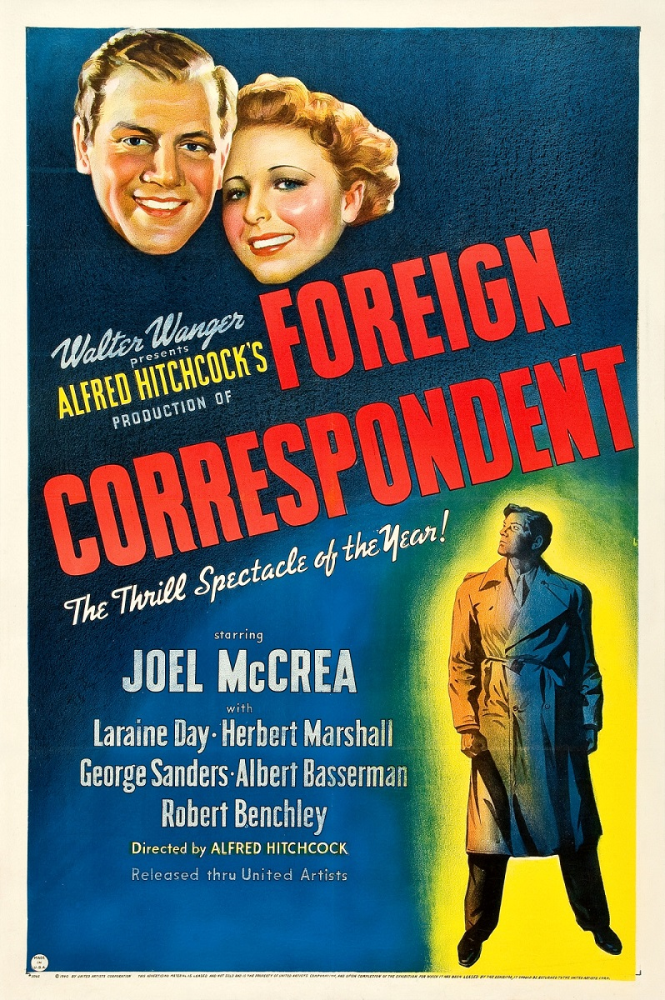

Foreign Correspondent
13th Academy Awards
(Oscars 1941)
6 Nominations, 0 Awards
| Nominations | ||
|---|---|---|
| Category | Nominees | Result |
| Outstanding Production | Walter Wanger | Nominated |
| Actor in a Supporting Role | Albert Basserman | Nominated |
| Writing (Original Screenplay) | Charles Bennett and Joan Harrison | Nominated |
| Cinematography (Black-and-White) | Foreign Correspondent | Nominated |
| Art Direction (Black-and-White) | Alexander Golitzen | Nominated |
| Special Effects | Paul Eagler and Thomas T. Moulton | Nominated |